顧客心理から逆算
流入元、比較対象、価格不安、FAQ、CTAを整理し、ページ全体の順番を設計します。
LP Production Campaign
ただ綺麗なページを作るだけではない。顧客心理、コピー、動画、漫画、デザイン、実装、公開前チェックまで一気通貫で設計し、見込み客が「相談してみよう」と進める導線を開発します。
Film Gallery
サービスの価値が複雑なほど、文章だけでは伝わりません。短い動画、動くビジュアル、ストーリーの順番を設計し、LPの冒頭で「自分のことだ」と思える入口を作ります。
Story
クリックはある。アクセスもある。けれど、問い合わせフォームの前で人が消える。理由は、商品が弱いからではありません。
見込み客は、価格、実績、流れ、安心材料、担当者の温度感を見ています。その順番が崩れていると、どれだけ良いサービスでも伝わりません。
私たちは、1ページを「見た目」ではなく「行動の道筋」として設計します。文章で納得を作り、動画で空気を伝え、漫画で理解の壁を下げる。LPは、可能性を問い合わせに変える導線です。
Manga Story
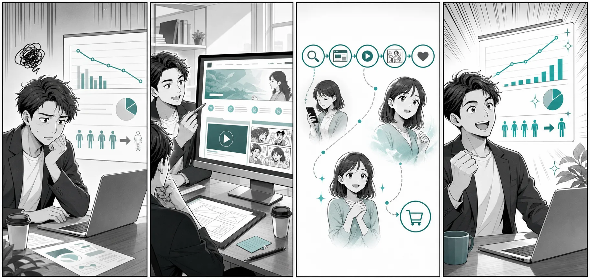
LP Lineup
求人媒体では伝わらない職場の雰囲気、1日の流れ、研修体制、応募前相談を1ページに整理。
複雑な専門サービスを、課題、解決策、導入流れ、FAQで商談化しやすくします。
業種別ガイドを読む →登壇者、参加メリット、当日の流れ、申込フォームまでを短い導線にまとめます。
業種別ガイドを読む →予約、来店、問い合わせに必要な不安解消と地図・料金・口コミ導線を整理。
業種別ガイドを読む →広告やSNSで目を引く動画、複雑な説明をほどく漫画、キャンペーン全体のストーリー設計まで対応します。
業種別ガイドを読む →Design Samples
SPL-01 採用LP
SPL-02 BtoB資料請求LP
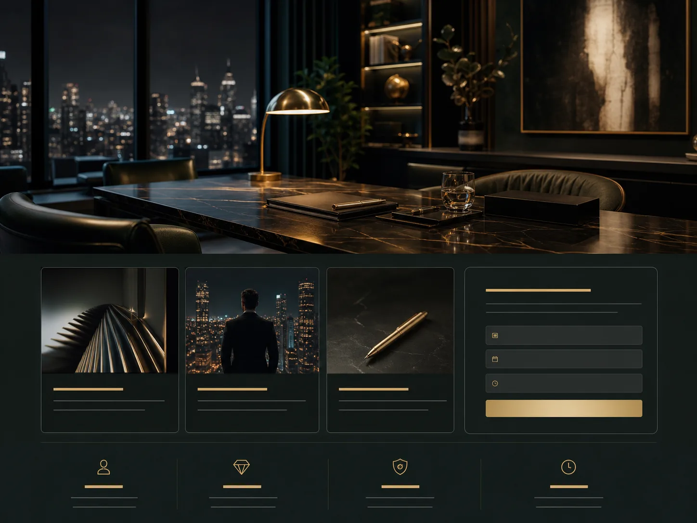
SPL-03 高単価サービスLP
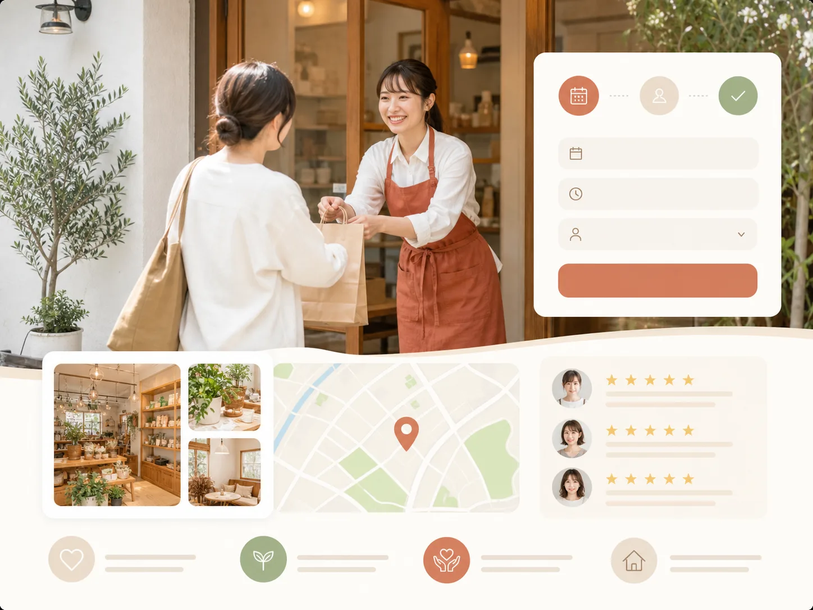
SPL-04 店舗・地域LP
SPL-05 スクール募集LP

SPL-06 セミナーLP
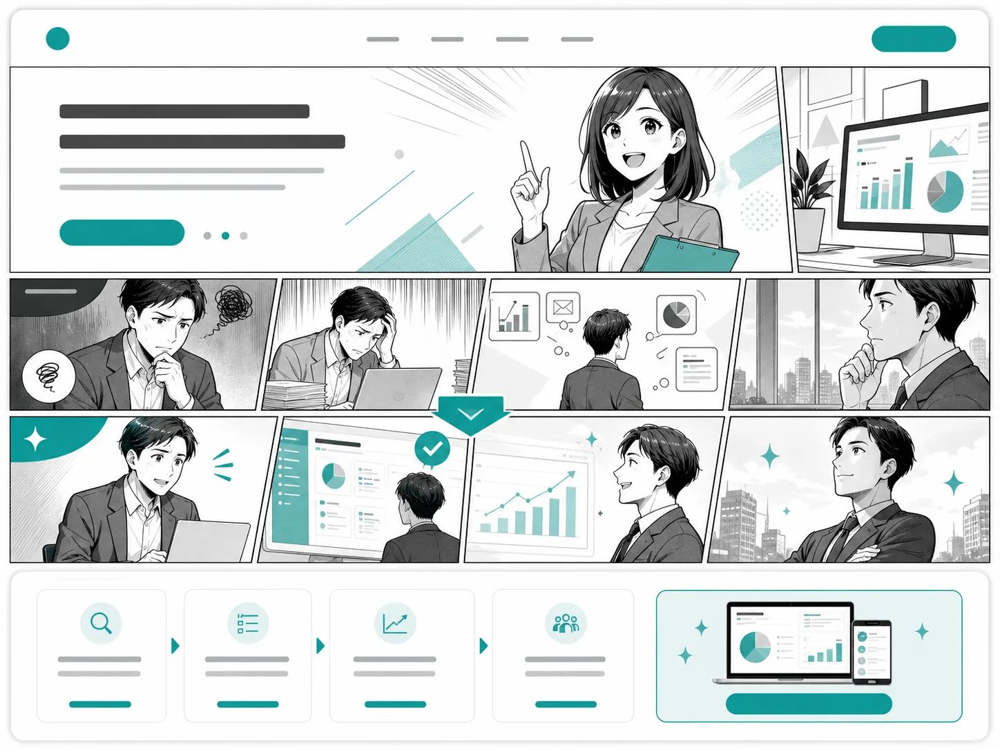
SPL-07 漫画つきLP
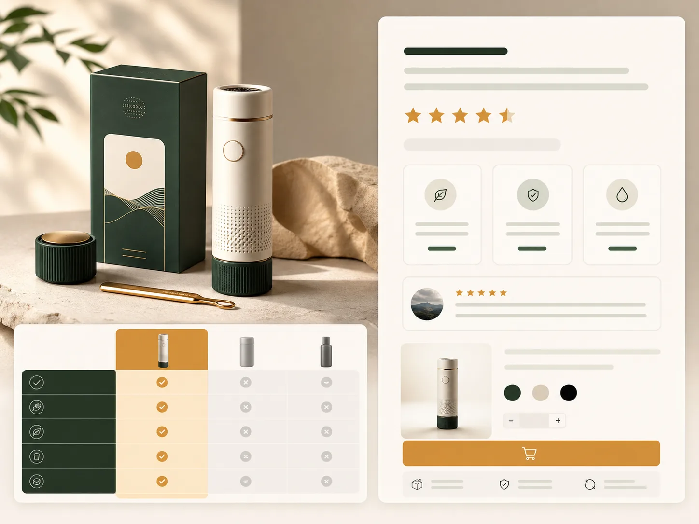
SPL-08 商品販売LP
What We Develop
誰の、どんな悩みを、どう変えるのか。ファーストビューで相談理由を作ります。
実績、流れ、料金、FAQ、担当者情報を、迷いが減る順番に配置します。
説明が長くなるサービスほど、動画や漫画で直感的に伝わる入口を作ります。
Professional Deliverables
事業者が次の判断をしやすいように、制作前・制作中・公開前の成果物を分けて残します。ページだけ渡して終わりにしないための制作体制です。
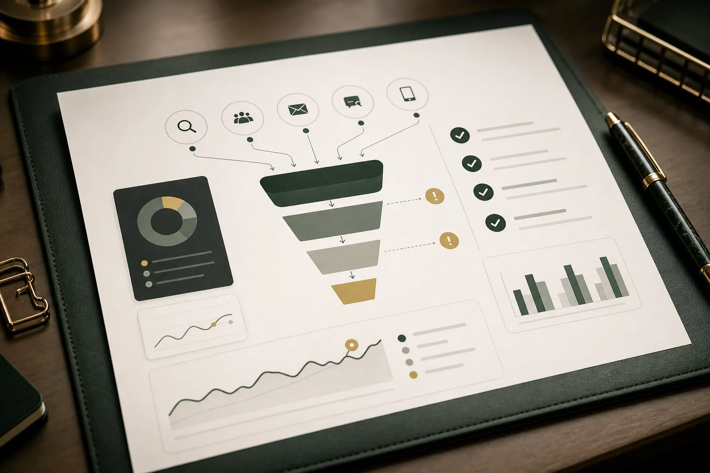
ITEM.01既存サイト、広告、SNS、求人媒体、問い合わせ導線の弱点を整理。
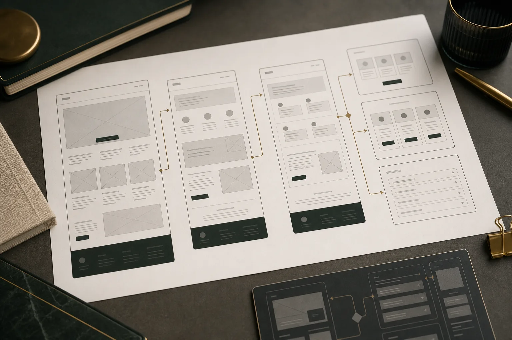
ITEM.02ファーストビュー、証拠、料金、FAQ、CTAの順番を設計。
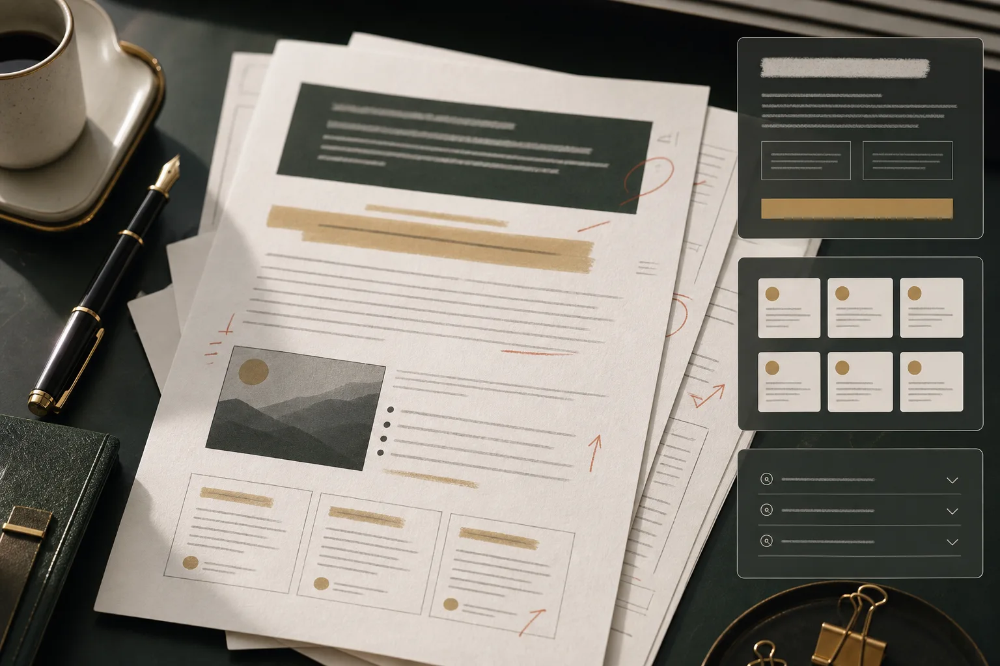
ITEM.03顧客が書ききれない訴求、FAQ、サービス説明を編集。
動画、漫画、写真、図解、比較表の使い分けを提案。
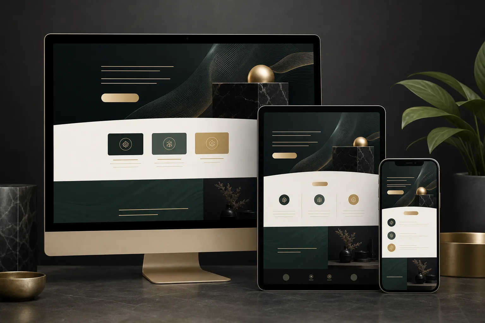
ITEM.05スマホ優先で実装し、相談・予約・資料請求の導線を整備。
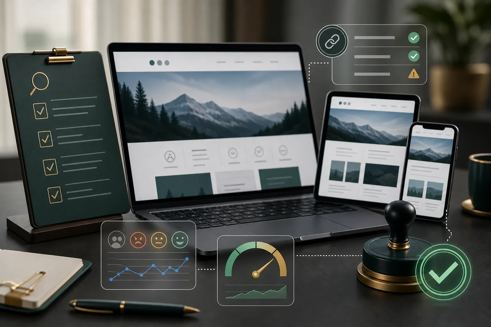
ITEM.06表示崩れ、リンク、CTA、リスク表現、素材確認をチェック。
Production Flow
見た目を作る前に、誰に、何を、どの順番で伝え、どこで相談へ進ませるかを決めます。制作工程を分解し、納品物と判断ポイントを明確にしたうえで進行します。
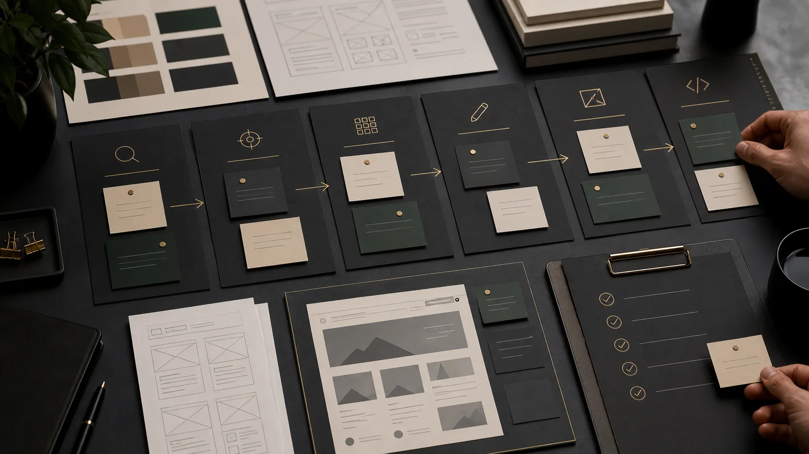
既存サイト、広告、SNS、求人媒体、問い合わせ導線を確認。訪問者が離脱しやすい箇所を整理します。
導線診断メモ誰に向けるLPか、主CTAは何か、成果保証しない範囲で何を改善対象にするかを定義します。
ターゲット・CTA定義ファーストビュー、課題提示、証拠、料金、FAQ、CTAを、迷いが減る順番に設計します。
ワイヤー構成案ヒアリング内容をもとに、顧客が書ききれない訴求・FAQ・流れの文章を編集します。
LP原稿ドラフト動画、漫画、写真、図解、比較表のどれが最短で伝わるかを選び、過剰演出を避けます。
表現設計スマホ優先で実装。読み込み、余白、CTA位置、フォーム導線まで確認して仕上げます。
公開用LPQuality Control
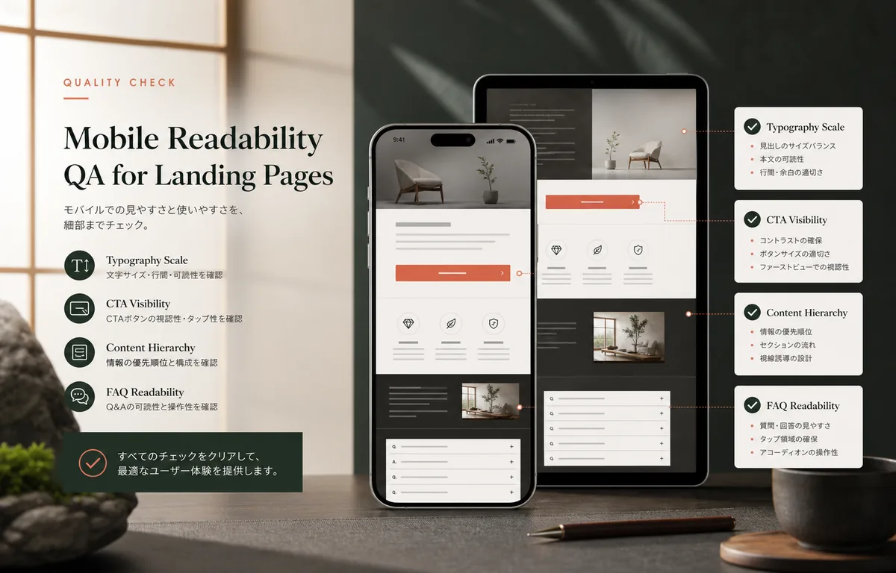
01スマホ視認性見出し、CTA、価格、FAQが小さな画面でも読めるか確認。
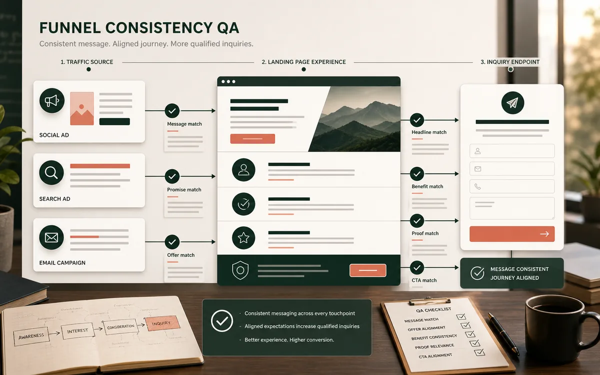
02導線一貫性流入元から問い合わせまで、訴求が途中でブレていないか確認。
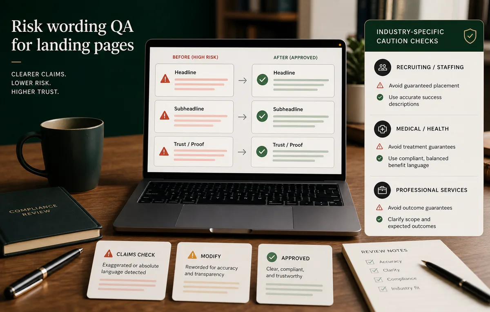
03リスク表現成果保証、誇大表現、採用・医療・士業などの注意表現を確認。
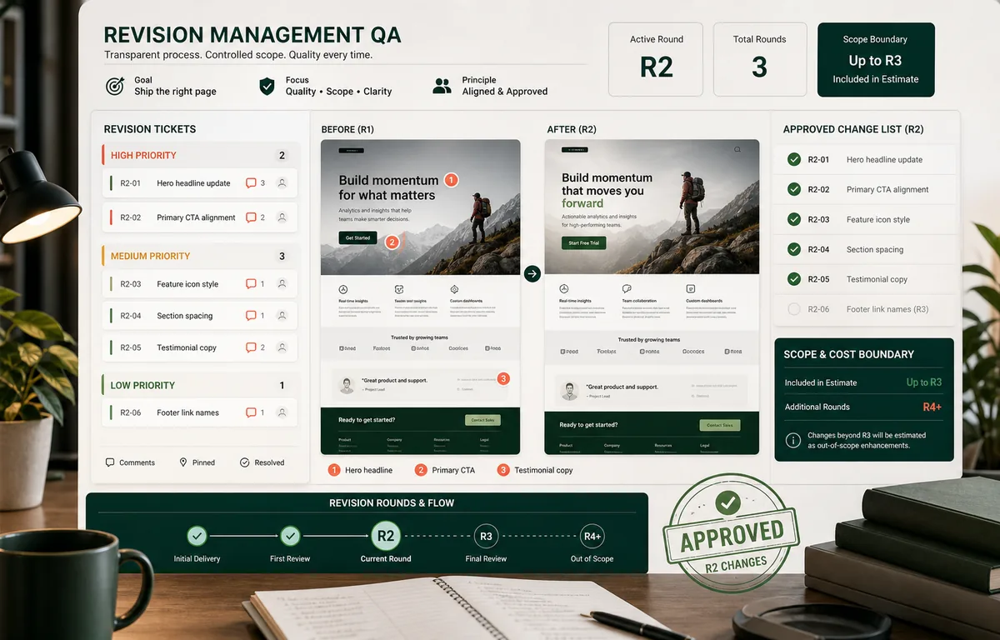
04修正管理修正範囲、回数、追加費用を事前に明確化して進行。
Direction Method
LP制作で最初に決めるべきなのは、色や装飾ではありません。誰が、どんな不安を抱えてページに来て、どの情報を見れば相談できるのか。その順番を先に設計します。
だから、ヒアリングでは「かっこいいデザイン」だけを聞きません。流入元、顧客の迷い、価格への不安、比較される競合、問い合わせ前の心理まで整理し、ページ全体を一本の導線として組み立てます。
Package
最初は小さく検証し、必要に応じて動画、漫画、改善運用へ広げます。価格は目安です。実案件では業種、素材状況、公開方法、修正範囲に合わせて見積もります。
50,000円税別
公開情報をもとに、見込み客がどこで迷うかを診断します。
150,000円税別
まず1ページで検証するための固定スコープ制作。原稿編集、修正2回、10営業日。
300,000円から
動画風ヒーロー、漫画セクション、キャンペーン構成まで含めた提案型LP。
30,000円月額から
公開後の文言改善、FAQ追加、CTA調整、簡易レポートを継続支援。
For Decision Makers
LP制作で失敗しやすいのは、作り始めたあとに目的、素材、公開方法、修正範囲が変わることです。初回相談では、制作可否より先に、費用対効果を判断するための前提を整理します。
15万円で収める範囲、30万円以上に広げるべき範囲、今は作らない方がよい範囲を分けます。
写真、実績、料金、FAQ、顧客の声、募集要項など、説得力に関わる素材を確認します。
成果保証、誇大表現、業法規制、採用条件の記載など、公開前に確認すべき表現を洗い出します。
Before Contact
問い合わせ数、応募数、売上は保証しません。LPの役割は、流入した人が迷わず相談へ進める導線を整えることです。
作れますが、写真や実績がある方が説得力は上がります。素材がない場合は、写真なし構成や生成画像の利用も検討します。
必須ではありません。説明が難しいサービス、広告で印象を残したい企画、採用や教育系では有効な選択肢です。
公開方法は案件ごとに確認します。広告運用は基本範囲外ですが、広告からの受け皿としてLP構成を整えることは可能です。
既存ドメインをお持ちであれば、サブドメインでの公開に対応します(別途設定費)。新規ドメインの取得や複雑なDNS設定は範囲外です。